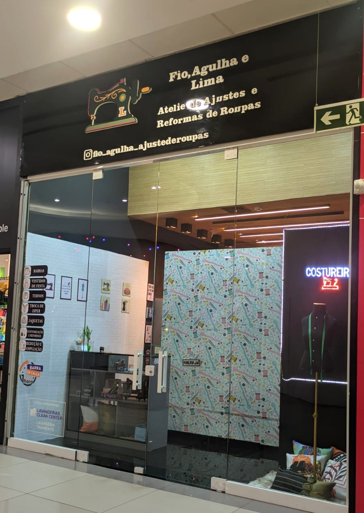

Conserto de Roupa em Curitiba
Atendimento com coleta e entrega — comodidade e qualidade para suas roupas.
Conheça nossos serviçosQuem Somos
Somos o Fio, Agulha e Lima, um atelier especializado em ajustes e reformas de roupas. Com atendimento domiciliar em Curitiba e ateliê no Park Shopping Boulevard, nosso foco é entregar qualidade, confiança e exclusividade em cada peça.

Serviços
- Ajuste de barras (calça, vestido, saia, terno)
- Troca de zíper (jeans, jaquetas, bolsas)
- Reforma de vestidos de festa e roupas sociais
- Conserto de jaquetas de couro
- Customização e ajustes sob medida
Localização
Nosso ateliê está no Park Shopping Boulevard – BR-116, nº 16303, Xaxim, Curitiba – PR. Atendemos toda a cidade com serviço de coleta e entrega.
Lojas

Park Shopping Boulevard
BR-116, nº 16303
Xaxim, Curitiba – PR
CEP 81690-300
Horário de atendimento:
Seg a Sáb: 11h às 22h
Dom: 14h às 20h